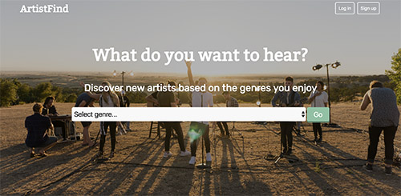

Designing For You
Developing For Your Users
Through a variety of front and back end practices and technologies, I can make your designs into reality and enhance interaction and functionality to create an experience your users will remember on any device
My Projects

RecipeBox
For this project, I was the sole designer and developer. I was given a time line of about 24 hours to create a full CRUD application that used the database to store information through the files in an XHR file, proving I can work fast and efficiently under short deadlines. This project was my first introduction to using AJAX in order to talk to PHP files that connected to a SQL database. All interactions were made without a responsive framework, as well.
Technologies used: HTML, CSS, PHP, Bootstrap, MySQL
IndieSpot.
Focusing mainly on layout, this site shows my strength in content flow and organization. IndieSpot was created from the general requirement of “build a website for a movie theater”. Since design was the focus, not everything on the site is functional, but the user is able to select the “Captain Fantastic” movie to see details on that film, as well as the “Quentin Tarantino Marathon” event to view details on that event. It is fully responsive and no responsive frameworks were used. I had a time line of about 48 hours to complete this project.
Technologies used: HTML, CSS
ArtistFind
The requirements for this project were to create an application using at least one API that would also implement full CRUD functionality as well as common design patterns within the programming. ES6 practices were also encouraged. I was again the sole designer and developer, and the time line was about four weeks. I implemented MVC as well as custom events and event dispatching in order to handle the data received from the API. The biggest challenge I ran into while making this project was that the first API I tried to use returned invalid image URLs. This meant that I had to use one API to return to me musical artists based on genre, and then with that data I had to query another API to return new artist object with valid images. I accomplished this through various custom events that were triggered on success of each API call. This was also the first time I utilized local storage and jQuery UI.
Technologies used: HTML, CSS, JavaScript, jQuery, Ajax, jQuery UI